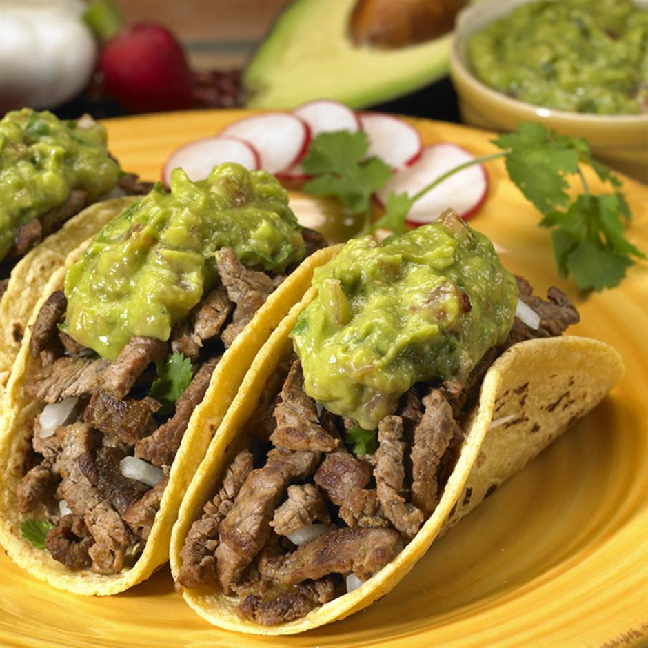

Tacos

Tacos de carne asada estilo Mazatlan
Receta para preparar unos autenticos y deliciosos tacos de carne asada.
Siguiendo estos pasos tendras una cena de lujo para atascarse deliciosamente.
Ingredientes
- Tortillas
- Carne asada
- Salsas
Receta
- Calentar las tortillas de maiz en el comal
- Asar la carne asada en su punto y servir en la tortilla
- Agregar las salsas al gusto para disfrutar de este delicioso taco